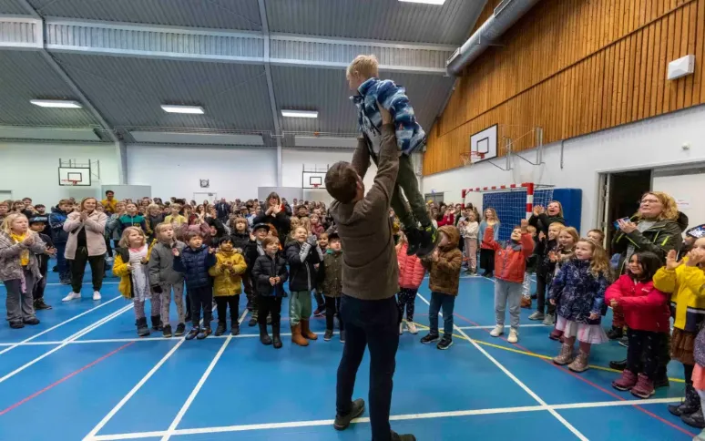
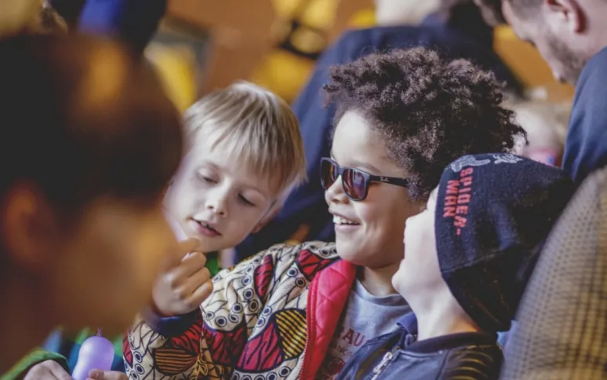

Skolens rummelighed
“Noget af det, jeg værdsætter allermest på Sct. Mariæ Skole, er den måde, man altid bliver mødt, man altid føler sig velkommen og både hørt og set. Jeg elsker den måde alle er velkomne, og at der er plads til alle.”
- SCTMS, Forælder

Skolens fællesskab
“Når man møder skolens ansatte, bliver man mødt at venlighed og overskud. Det virker som om, alle kender alle.”
- SCTMS, Forælder
Skolens faglighed
“På Sct. Mariæ Skole vægtes fagligheden og eleverne har mulighed for både at deltage i talentforløb på de lokale gymnasier og få en Camebridge engelsk eksamen. Det er godt for deres faglige udvikling”
- SCTMS, Forælder